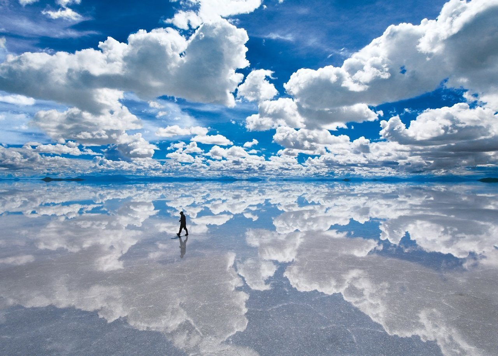
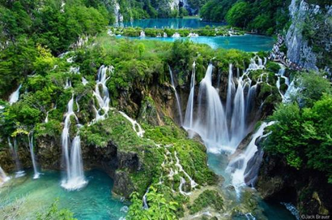

Bem-vindo aos meus mapas. Conheça um lugar que gostei de conhecer e outras 2 sugestões de amigos.
Janeiro de 2017

O Salar de Uyuni é conhecido como o maior deserto de sal do mundo. Localizado no sudoeste da Bolívia, próximo de cidades como Uyuni e Potosí
Dica do Moises - Setembro 2010

Parque na Croácia, com lagos e quedas d'água estoteantes. Durante o inverno todos os lagos congelam e o cenário se torna inacreditavelmente diferente..